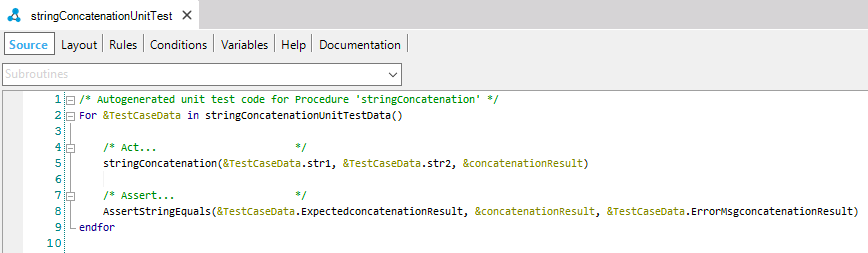
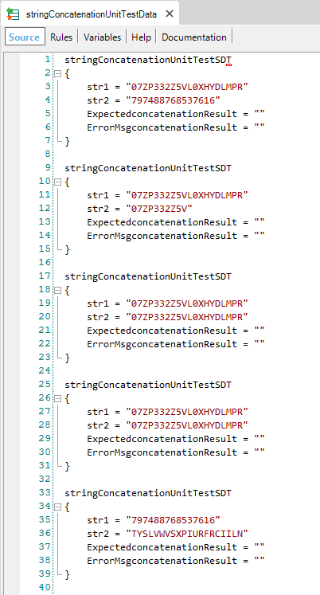

Creating Unit Tests
Before starting, make sure you are using a GeneXus version that already supports the Unit Testing Framework. If you don't have this option, check here how to install it. Unit tests are a new type of Object in your GeneXus KB with the particularity of being a special GeneXus Procedure. This means that you can write GeneXus code inside it for testing your objects with different data and validations (assertions). The easiest way to create a unit test is by right-clicking the Object you want to test in the KB Explorer and selecting the “Create Unit Test” option. This option will automatically create a new Unit Test Object to test the object you've selected. Supported objects are procedures, data providers and business components. For this purpose, a new unit test will be automatically generated, where you will probably need to add different data input and output to test different scenarios. If you want to modify the number of data sets generated, you need to set the property “Data sets count” in KB test properties. By default, the test generates three objects:
You can find a video explaining these three objects here. For example, let's imagine a very simple procedure that concatenates two input strings received by parameter, called "stringConcatenation". So this will be a simple test auto-generated:  This auto-generated code iterates over a collection of data (StringConcatenationUnitTestData), the auto-generated data provider with random data:  So, this data provider enables you to run the test with several data combinations. By default, only 5 data sets are generated automatically using a mix of fixed and random values. Developers can configure data generated (sets and data used), by selecting the algorithm to combine data. To better understand how to configure test data generation, check this article. Please note that the code template is intended to be fully edited to add different inputs and validate output using assertions. Assertions are used to validate the procedure's result/output during test execution, usually by comparing an output variable with an expected value. Any number of assertions can be added to a Test, each validating some different results. If any of them fail, the Test result will be FAILED. You can also add database assertions navigating results using FOREACH as usual, comparing database results against your procedure's output. |

| Backlinks | ||
| DevOps with GeneXus 16 | Toc:GXtest v4 | GXtest v4 Licensing |
| Unit Testing |